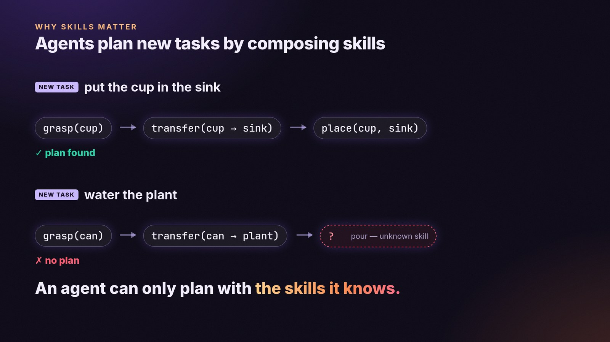

Why skills? Manipulation varies across objects and scenes, yet shares a small set of reusable skills, and planning with them helps agents generalize.
But an agent can only plan with skills it knows. Recovering skills from experience, the inverse of planning, grows that set.

Alt text
Two new tasks: "put the cup in the sink" is planned as grasp, transfer, place; "water the plant" fails because the pour skill is unknown.